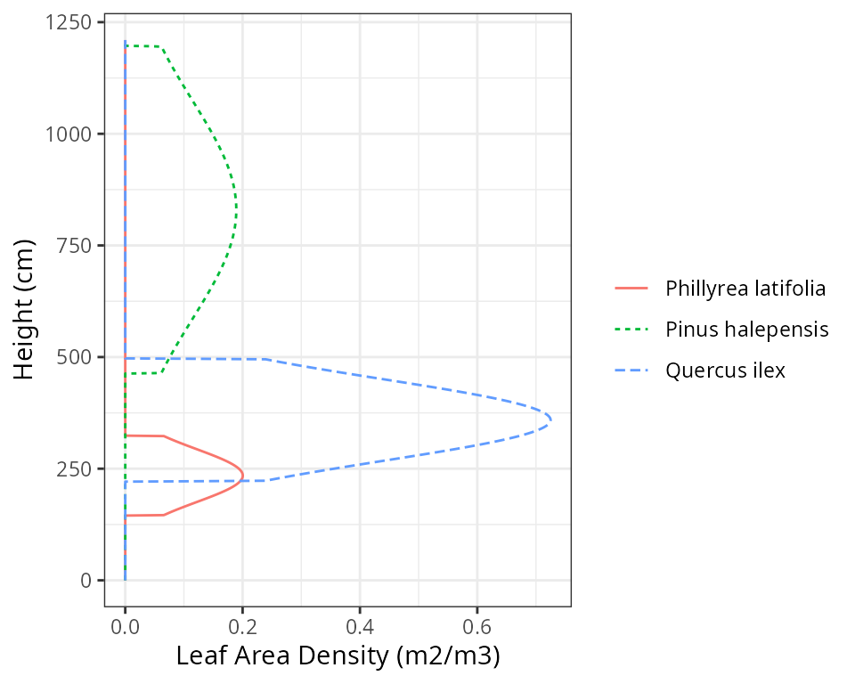
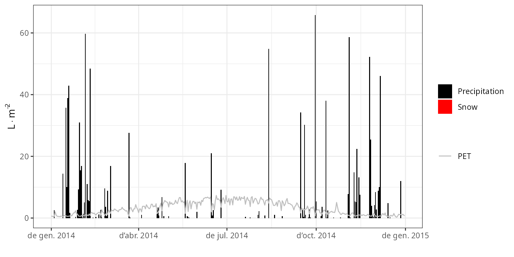
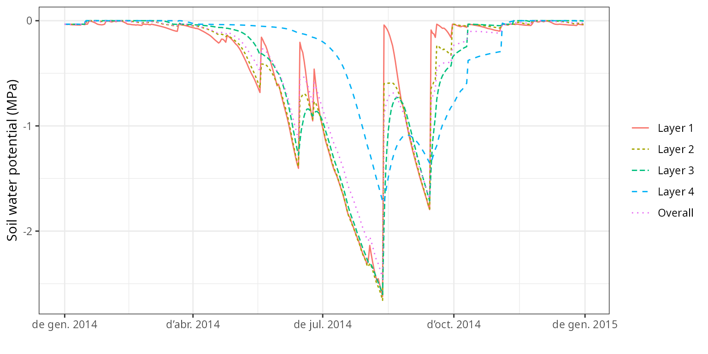
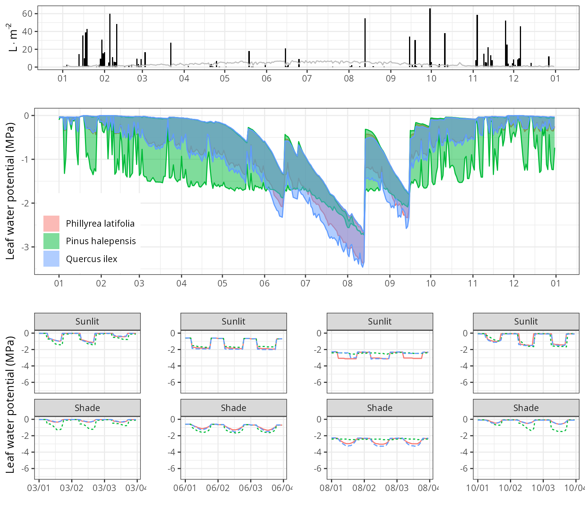

Soil and plant water balances at Font-Blanche
Miquel De Caceres (CREAF), Nicolas Martin-StPaul (INRA)
2022-03-24
Source:vignettes/workedexamples/FontBlanche.Rmd
FontBlanche.RmdIntroduction
About this vignette
This document describes how to run the water balance model on a forest plot at Font-Blanche (France), using the R function spwb() included in package medfate. The document indicates how to prepare the model inputs, use the model simulation function, evaluate the predictions against available observations and inspect the outputs.
About the Font-Blanche research forest
The Font-Blanche research forest, located in southeastern France (43º14′27″ N 5°40′45″ E, 420 m elevation), is composed of a top strata of Pinus halepensis (Aleppo pine) reaching about 12 m, a lower strata of Quercus ilex (holm oak), reaching about 6 m, and an understorey strata dominated by Quercus coccifera but including other species such as Phillyrea latifolia. It is spatially heterogeneous: not all trees in each strata are contiguous, so trees from the lower stratas are partially exposed to direct light. The forest grows on rocky and shallow soils that have a low retention capacity and are of Jurassic limestone origin. The climate is Mediterranean, with a water stress period in summer, cold or mild winters and most precipitation occurring between September and May. The experimental site, which is dedicated to study forest carbon and water cycles, has an enclosed area of 80×80 m (Simioni et al. 2013) but our specific plot is a quadrat of dimensions 25x25 m.
Model inputs
Any forest water balance model needs information on climate, vegetation and soils of the forest stand to be simulated. Moreover, since the soil water balance in medfate differentiates between species, species-specific parameters are also needed. Since FontBlanche is one of the sites used for evaluating the model, and much of the data can be found in Moreno et al. (2021). We can use a data list fb with all the necessary inputs:
fb <- medfatereports::load_list("FONBLA")## [1] "treeData" "shrubData" "customParams" "measuredData"
## [5] "meteoData" "miscData" "soilData" "terrainData"
## [9] "remarks" "sp_params" "forest_object1"Soil
We require information on the physical attributes of soil in FontBlanche, namely soil depth, texture, bulk density and rock fragment content. Soil information needs to be entered as a data frame with soil layers in rows and physical attributes in columns. The model accepts one to five soil layers with arbitrary widths. Because soil properties vary strongly at fine spatial scales, ideally soil physical attributes should be measured on samples taken at the forest stand to be simulated. For those users lacking such data, soil properties modelled at larger scales are available via soilgrids.org (see function soilgridsParams()). In our case soil physical attributes are already defined in the data bundled for FontBlanche:
spar <- fb$soilData
print(spar)## widths clay sand om bd rfc
## 1 300 39 26 6 1.45 50
## 2 700 39 26 3 1.45 65
## 3 1000 39 26 1 1.45 85
## 4 2500 39 26 1 1.45 90The soil input for function spwb() is actually an object of class soil that is created using a function with the same name:
fb_soil = soil(spar)The print() function for objects soil provides a lot of information on soil physical properties and water capacity:
print(fb_soil)## Soil depth (mm): 4500
##
## Layer 1 [ 0 to 300 mm ]
## clay (%): 39 silt (%): 29 sand (%): 26 organic matter (%): 6 [ Clay loam ]
## Rock fragment content (%): 50 Macroporosity (%): 7
## Theta WP (%): 25 Theta FC (%): 39 Theta SAT (%): 54 Theta current (%) 39
## Vol. WP (mm): 37 Vol. FC (mm): 58 Vol. SAT (mm): 81 Vol. current (mm): 58
## Temperature (Celsius): NA
##
## Layer 2 [ 300 to 1000 mm ]
## clay (%): 39 silt (%): 32 sand (%): 26 organic matter (%): 3 [ Clay loam ]
## Rock fragment content (%): 65 Macroporosity (%): 7
## Theta WP (%): 24 Theta FC (%): 38 Theta SAT (%): 49 Theta current (%) 38
## Vol. WP (mm): 59 Vol. FC (mm): 93 Vol. SAT (mm): 121 Vol. current (mm): 93
## Temperature (Celsius): NA
##
## Layer 3 [ 1000 to 2000 mm ]
## clay (%): 39 silt (%): 34 sand (%): 26 organic matter (%): 1 [ Clay loam ]
## Rock fragment content (%): 85 Macroporosity (%): 7
## Theta WP (%): 24 Theta FC (%): 37 Theta SAT (%): 47 Theta current (%) 37
## Vol. WP (mm): 35 Vol. FC (mm): 56 Vol. SAT (mm): 70 Vol. current (mm): 56
## Temperature (Celsius): NA
##
## Layer 4 [ 2000 to 4500 mm ]
## clay (%): 39 silt (%): 34 sand (%): 26 organic matter (%): 1 [ Clay loam ]
## Rock fragment content (%): 90 Macroporosity (%): 7
## Theta WP (%): 24 Theta FC (%): 37 Theta SAT (%): 47 Theta current (%) 37
## Vol. WP (mm): 59 Vol. FC (mm): 93 Vol. SAT (mm): 116 Vol. current (mm): 93
## Temperature (Celsius): NA
##
## Total soil saturated capacity (mm): 388
## Total soil water holding capacity (mm): 300
## Total soil extractable water (mm): 136
## Total soil current Volume (mm): 300
##
## Snow pack water equivalent (mm): 0
## Soil water table depth (mm): 4500The soil object is also used to store the moisture degree of each soil layer. In particular, W contains the state variable that represents moisture content - the proportion of moisture relative to field capacity - which is by default initialized to 1 for each layer:
fb_soil$W## [1] 1 1 1 1Species parameters
Simulation models in medfate require a data frame with species parameter values. The package provides a default data set of parameter values for a number of Mediterranean species occurring in Spain (rows), resulting from bibliographic search, fit to empirical data or expert-based guesses:
data("SpParamsMED")However, sometimes one may wish to override species defaults with custom values. In the case of FontBlanche there is a table of preferred parameters:
fb$customParams## SpIndex Cohort g Kmax_stemxylem VCleaf_kmax VCleaf_c VCleaf_d LeafPI0
## 1 142 T1_142 0.8 NA 3.00 NA NA NA
## 2 148 T2_148 1.0 NA 4.00 NA NA NA
## 3 168 T3_168 0.8 0.4 2.63 5.41 -4.18 -2.66
## LeafEPS LeafAF Al2As
## 1 NA NA NA
## 2 NA NA 631.000
## 3 10.57 0.43 1540.671We can use function modifySpParams() to replace the values of parameters for the desired traits, leaving the rest unaltered:
SpParamsFB = modifySpParams(SpParamsMED, fb$customParams)
SpParamsFB## Name IFNcodes SpIndex Genus Order Family Group
## 143 Phillyrea latifolia 8 142 Phillyrea Lamiales Oleaceae Angiosperm
## 149 Pinus halepensis 24 148 Pinus Pinales Pinaceae Gymnosperm
## 169 Quercus ilex 45/245 168 Quercus Fagales Fagaceae Angiosperm
## GrowthForm LifeForm LeafShape LeafSize PhenologyType Hmed Hmax Z50
## 143 Tree Phanerophyte Broad Medium oneflush-evergreen 150 900 NA
## 149 Tree Phanerophyte Needle Small oneflush-evergreen 850 1900 NA
## 169 Tree/Shrub Phanerophyte Broad Medium oneflush-evergreen 500 1300 NA
## Z95 fHDmin fHDmax a_ash b_ash a_bsh b_bsh a_btsh b_btsh
## 143 2353 45 109 NA NA NA NA NA NA
## 149 7500 40 130 NA NA NA NA NA NA
## 169 5020 40 100 1.857486 1.885548 0.523883 0.7337293 0.7327147 0.737577
## cr a_fbt b_fbt c_fbt d_fbt a_cr b_1cr b_2cr
## 143 NA NA NA NA NA NA NA NA
## 149 NA 0.05684887 1.521218 -0.024946517 0 NA NA NA
## 169 NA 0.06310630 1.545032 -0.005288476 0 1.98539 -0.552 -0.01386
## b_3cr c_1cr c_2cr a_cw b_cw LeafDuration t0gdd Sgdd
## 143 NA NA NA NA NA 2.556345 NA NA
## 149 NA NA NA 0.6415296 0.7310 2.536875 NA NA
## 169 -0.000110736 -0.00685 -0.20101 0.5681897 0.7974 2.183837 54.5 240.7
## Tbgdd Ssen Phsen Tbsen xsen ysen SLA LeafDensity WoodDensity
## 143 NA NA NA NA NA NA 6.881886 0.5327417 0.7050000
## 149 NA NA NA NA NA NA 5.140523 0.2982842 0.6077016
## 169 4.34 10178 12.5 28.5 2 2 6.850951 0.4893392 0.9008264
## FineRootDensity conduit2sapwood r635 pDead Al2As Ar2Al LeafWidth
## 143 NA NA 1.917579 0.119768 1698.950 NA 1.2000000
## 149 NA 0.9236406 1.964226 0.000500 631.000 NA 0.1384772
## 169 NA 0.6238125 1.805872 0.000260 1540.671 NA 1.7674359
## SRL RLD maxFMC minFMC LeafPI0 LeafEPS LeafAF StemPI0 StemEPS
## 143 NA NA 108.24724 56.53442 NA NA NA NA NA
## 149 3172.572 NA 126.03063 86.22550 -1.591429 8.918571 0.3525 NA NA
## 169 4398.812 NA 93.15304 57.44192 -2.660000 10.570000 0.4300 NA NA
## StemAF SAV HeatContent LigninPercent gammaSWR alphaSWR kPAR g Tmax_LAI
## 143 NA 9630 21400 NA NA NA NA 0.8 NA
## 149 NA 6050 22150 24.52473 NA NA NA 1.0 NA
## 169 NA 4050 19300 28.97492 NA NA NA 0.8 NA
## Tmax_LAIsq Psi_Extract Psi_Critic WUE WUE_decay Gswmin Gswmax
## 143 NA -1.896994 -6.489351 NA NA NA NA
## 149 NA -1.596176 -3.816852 3.849903 NA 0.002031250 0.1940833
## 169 NA -1.842765 -2.968825 1.720883 NA 0.006003126 0.2007222
## VCleaf_kmax VCleaf_c VCleaf_d Kmax_stemxylem VCstem_c VCstem_d
## 143 3.00 NA NA 0.4083769 2.619333 -7.533736
## 149 4.00 NA NA 0.1500000 7.458883 -4.481392
## 169 2.63 5.41 -4.18 0.4000000 2.558358 -5.103492
## Kmax_rootxylem VCroot_c VCroot_d Vmax298 Jmax298 Nleaf Nsapwood
## 143 NA NA NA 65.23250 146.2701 16.09170 2.78000
## 149 NA NA NA 58.89948 119.9273 11.91507 1.26556
## 169 NA NA NA 41.80912 103.0690 14.11983 5.66150
## Nfineroot WoodC RERleaf RERsapwood RERfineroot CCleaf CCsapwood
## 143 NA NA NA NA NA 1.6300 NA
## 149 9.187476 0.4979943 0.01210607 NA NA 1.5905 1.47
## 169 12.166747 0.4740096 0.01757808 NA NA 1.4300 NA
## CCfineroot RGRleafmax RGRsapwoodmax RGRfinerootmax SRsapwood SRfineroot
## 143 NA NA NA NA NA NA
## 149 1.3 NA NA NA NA NA
## 169 NA NA NA NA NA NA
## RSSG MortalityBaselineRate SeedProductionHeight ProbRecr MinTempRecr
## 143 NA NA NA NA 1.231819
## 149 NA NA NA NA 2.035703
## 169 NA NA NA NA 0.405868
## MinMoistureRecr MinFPARRecr RecrTreeDBH RecrTreeHeight RecrShrubHeight
## 143 0.3464240 0.5076498 NA NA NA
## 149 0.2022525 6.2887361 NA NA NA
## 169 0.2860409 1.5786236 NA NA NA
## RecrTreeDensity RecrShrubCover RecrZ50 RecrZ95
## 143 NA NA NA NA
## 149 NA NA NA NA
## 169 NA NA NA NANote that the function returns a subset of rows for the species mentioned in customParams. Not all parameters are needed for the soil water balance model. The user can find parameter definitions in the help page of this data set. However, to fully understand the role of parameters in the model, the user should read the details of model design and formulation (http://emf-creaf.github.io/medfate).
Vegetation
Models included in medfate were primarily designed to be ran on forest inventory plots. In this kind of data, the vegetation of a sampled area is described in terms of woody plants (trees and shrubs) along with their size and species identity. Forest plots in medfate are assumed to be in a format that follows closely the Spanish forest inventory. Each forest plot is represented in an object of class forest, a list that contains several elements. Among them, the most important items are two data frames, treeData (for trees) and shrubData for shrubs:
fb_forest = emptyforest()
fb_forest## $ID
## [1] ""
##
## $patchsize
## [1] 10000
##
## $treeData
## [1] Species DBH Height N Z50 Z95
## <0 rows> (or 0-length row.names)
##
## $shrubData
## [1] Species Height Cover Z50 Z95
## <0 rows> (or 0-length row.names)
##
## $herbCover
## [1] 0
##
## $herbHeight
## [1] 0
##
## attr(,"class")
## [1] "forest" "list"Trees are expected to be primarily described in terms of species, diameter (DBH) and height, whereas shrubs are described in terms of species, percent cover and mean height. In our case, we will for simplicity avoid shrubs and concentrate on the main three tree species in the Font-Blanche forest plot: Phillyrea latifolia (code 53), Pinus halepensis (Alepo pine, code 54), and Quercus ilex (holm oak; code 68). In order to run the model, one has to prepare a data table like this one, already prepared for Font-Blanche:
fb$treeData## Species DBH Height N Z50 Z95
## 1 142 2.587859 323.0000 1248 390 1470
## 2 148 26.759914 1195.7667 256 300 1200
## 3 168 6.220031 495.5532 3104 529 2287Trees have been grouped by species, so DBH and height values are means (in cm), and N indicates the number of trees in each category. Package medfate allows separating trees by size, but for simplicity we do not distinguish here between tree sizes within each species. Columns Z50 and Z95 indicate the depths (in mm) corresponding to cumulative 50% and 95% of fine roots, respectively.
In order to use this data, we need to replace the part corresponding to trees into the forest object that we created before:
fb_forest$treeData = fb$treeData
fb_forest## $ID
## [1] ""
##
## $patchsize
## [1] 10000
##
## $treeData
## Species DBH Height N Z50 Z95
## 1 142 2.587859 323.0000 1248 390 1470
## 2 148 26.759914 1195.7667 256 300 1200
## 3 168 6.220031 495.5532 3104 529 2287
##
## $shrubData
## [1] Species Height Cover Z50 Z95
## <0 rows> (or 0-length row.names)
##
## $herbCover
## [1] 0
##
## $herbHeight
## [1] 0
##
## attr(,"class")
## [1] "forest" "list"Because the forest plot format is rather specific, medfate also allows starting in an alternative way using two data frames, one with aboveground information (i.e. the leave area and size of plants) and the other with belowground information (i.e. root distribution). The aboveground data frame does not distinguish between trees and shrubs. It includes, for each plant cohort to be considered in rows, its species identity, height, leaf area index (LAI) and crown ratio. While users can build their input data themselves, we use function forest2aboveground() on the object fb_forest to show how should the data look like:
fb_above = forest2aboveground(fb_forest, SpParamsFB)
fb_above## SP N DBH Cover H CR LAI_live LAI_expanded
## T1_142 142 1248 2.587859 NA 323.0000 0.5510653 0.1878448 0.1878448
## T2_148 148 256 26.759914 NA 1195.7667 0.6126601 0.9278754 0.9278754
## T3_168 168 3104 6.220031 NA 495.5532 0.5531152 2.0430558 2.0430558
## LAI_dead
## T1_142 0
## T2_148 0
## T3_168 0Note that the call to forest2aboveground() included species parameters, because species-specific parameter values are needed to calculate leaf area from tree diameters or shrub cover using allometric relationships. Columns N, DBH and Cover are required for simulating growth, but not for soil water balance, which only requires columns SP, H (in cm), CR (i.e. the crown ratio), LAI_live, LAI_expanded and LAI_dead. Here plant cohorts are given unique codes that tell us whether they correspond to trees or shrubs. In practice, the user only needs to worry to calculate the values for LAI_live. LAI_live and LAI_expanded can contain the same LAI values, and LAI_dead is normally zero.
We see that at Font-Blanche holm oaks (code 68) represent most of the total leaf area. On the other hand, pines are taller than oaks. medfate assumes that leaf distribution follows a truncated normal curve between the crown base height and the total height. This can be easily inspected using function vprofile_leafAreaDensity():
vprofile_leafAreaDensity(fb_forest, SpParamsFB, byCohorts = T, bySpecies = T)
Regarding belowground information, the usuer should supply a matrix describing for each plant cohort, the proportion of fine roots in each soil layer. As before, we use function forest2belowground() on the object fb_forest to show how should the data look like:
fb_below = forest2belowground(fb_forest, fb_soil)
fb_below## 1 2 3 4
## T1_142 0.3602157 0.5332967 0.08477533 0.02171222
## T2_148 0.5016024 0.4291685 0.05479894 0.01443019
## T3_168 0.2457868 0.5470717 0.15511819 0.05202335In our case, these proportions were implicitly specified in parameters Z50 and Z95. In fact, these values describe a continuous distribution of fine roots along depth, which can be displayed using function vprofile_rootDistribution():
vprofile_rootDistribution(fb_forest, SpParamsFB, bySpecies = T)Note that in Font-Blanche we set that the root system of Aleppo pines (Pinus halepensis) would be more superficial than that of the other two species. Moreover, holm oak trees are the ones who extend their roots down to deepest soil layers.
Meteorology
Water balance simulations of function spwb() require daily weather inputs. The weather variables that are required depend on the complexity of the soil water balance model we are using. In the simplest case, only mean temperature, precipitation and potential evapo-transpiration (PET) is required, but the more complex simulation model also requires radiation, wind speed, min/max temparature and relative humitidy. Here we already have a data frame with the daily meteorology measured at Font-Blanche for year 2014:
fb_meteo = fb$meteoData
head(fb_meteo)## DOY MeanTemperature MinTemperature MaxTemperature
## 2014-01-01 1 7.661856 5.988889 8.960000
## 2014-01-02 2 9.525431 7.958333 11.550000
## 2014-01-03 3 9.482417 8.176111 11.762220
## 2014-01-04 4 10.016813 6.313000 11.010000
## 2014-01-05 5 6.619919 4.766000 9.060555
## 2014-01-06 6 8.923008 6.793889 12.329440
## MeanRelativeHumidity MinRelativeHumidity MaxRelativeHumidity
## 2014-01-01 87.78224 80.37265 98.48404
## 2014-01-02 96.40669 84.22588 100.00000
## 2014-01-03 93.05705 79.93501 100.00000
## 2014-01-04 96.31667 90.14023 100.00000
## 2014-01-05 57.77938 48.92043 65.71329
## 2014-01-06 64.40477 51.31975 74.46718
## WindSpeed Precipitation Radiation PET
## 2014-01-01 2.317495 0.000000 1.5050178 0.7069255
## 2014-01-02 2.407691 0.000000 2.6173102 0.6952736
## 2014-01-03 1.950114 0.000000 3.9089762 0.7215784
## 2014-01-04 3.596797 2.590674 0.4753025 0.6505694
## 2014-01-05 7.310334 0.000000 8.6224570 2.6767326
## 2014-01-06 2.301697 0.000000 6.7835715 1.3093853Simulation models in medfate have been designed to work along with data generated from package meteoland (De Cáceres et al. 2018), which specifies conventions for variable names and units. The user is strongly recommended to resort to this package to obtain suitable weather input for soil water balance simulations (see http://emf-creaf.github.io/meteoland).
Simulation control
Apart from data inputs, the behavior of simulation models can be controlled using a set of global parameters. The default global parameter values are obtained using function defaultControl():
fb_control = defaultControl()
fb_control$transpirationMode = "Sperry"
fb_control$soilFunctions = "VG"
fb_control$subdailyResults = TRUE
fb_control$cavitationRefill = "rate"
fb_control$fracRootResistance = 0.4
fb_control$capacitance = TRUEWhere the following changes are set to control parameters:
- Transpiration is set
transpirationMode = "Sperry", which implies a greater complexity of plant hydraulics and energy balance calculations. - Soil water retention curves are calculated using Van Genuchten’s equations.
- Subdaily results generated by the model are kept.
- Coarse root resistance is assumed to be 40% of total plant resistance
- Capacitance effects are included
Water balance input object
A last step is needed before calling simulation functions. It consists in the compilation of all aboveground and belowground parameters and the specification of additional parameter values for each plant cohort, such as their light extinction coefficient or their response to drought. If one has a forest object, the spwbInput object can be generated in directly from it, avoiding the need to explicitly build fb_above and fb_below data frames:
fb_x = forest2spwbInput(fb_forest, fb_soil, SpParamsFB, fb_control)Different species parameter variables will be drawn from SpParamsMED depending on the value of transpirationMode. For the simple water balance model, relatively few parameters are needed. All the input information for forest data and species parameter values can be inspected by printing the input object.
It is important to remember that, unlike normal objects in R, any water balance simulation will modify the spwbInput object. Hence, one can use the same object to simulate water balance sequentially and the final state of one simulation is the initial state of the next.
Finally, note that one can play with plant-specific parameters for soil water balance (instead of using species-level values) by using function modifyCohortParams():
fb_x <- modifyCohortParams(fb_x, fb$customParams, verbose = FALSE)We recommend using modifyCohortParams() instead of manually modifying values in the spwbInput object because some parameters are related, so that modifying a given parameter value should affect others. These dependencies are taken into account automatically in modifyCohortParams().
Running the model
Function spwb() requires two main objects as input:
- A
spwbInputobject with forest and soil parameters (fb_xin our case). - A data frame with daily meteorology for the study period (
fb_meteoin our case).
Now we are ready to call function spwb():
fb_SWB = spwb(fb_x, fb_meteo, elevation = 420, latitude = 43.24083)## DOY taken from input column 'DOY'
## Initial soil water content (mm): 268.656
## Initial snowpack content (mm): 0
## Performing daily simulations
##
## [Year 2014]:........................## Warning in spwb(fb_x, fb_meteo, elevation = 420, latitude = 43.24083): overflow
## problem in the computation of one of the gamma factors before starting the
## Newton iteration. The initial approximation to the root is given as output.## .....## Warning in spwb(fb_x, fb_meteo, elevation = 420, latitude = 43.24083): overflow
## problem in the computation of one of the gamma factors before starting the
## Newton iteration. The initial approximation to the root is given as output.## .......
##
## Final soil water content (mm): 267.397
## Final snowpack content (mm): 0
## Change in soil water content (mm): -1.25911
## Soil water balance result (mm): -1.25911
## Change in snowpack water content (mm): 0
## Snowpack water balance result (mm): 0
## Water balance components:
## Precipitation (mm) 1066
## Rain (mm) 1066 Snow (mm) 0
## Interception (mm) 201 Net rainfall (mm) 865
## Infiltration (mm) 684 Runoff (mm) 181 Deep drainage (mm) 312
## Soil evaporation (mm) 2 Transpiration (mm) 382
## Plant extraction from soil (mm) 371 Plant water balance (mm) -11 Hydraulic redistribution (mm) 50Console output provides the water balance totals for the period considered, which may span several years. The output of function spwb() is an object of class with the same name, actually a list:
class(fb_SWB)## [1] "spwb" "list"If we inspect its elements, we realize that there are several components:
names(fb_SWB)## [1] "latitude" "topography" "weather"
## [4] "spwbInput" "spwbOutput" "WaterBalance"
## [7] "EnergyBalance" "Temperature" "TemperatureLayers"
## [10] "Soil" "Stand" "Plants"
## [13] "SunlitLeaves" "ShadeLeaves" "subdaily"For example, WaterBalance contains water balance components in form of a data frame with days in rows:
head(fb_SWB$WaterBalance)## PET Precipitation Rain Snow NetRain Snowmelt
## 2014-01-01 0.7069121 0.000000 0.000000 0 0.000000000 0
## 2014-01-02 0.6952499 0.000000 0.000000 0 0.000000000 0
## 2014-01-03 0.7215430 0.000000 0.000000 0 0.000000000 0
## 2014-01-04 0.6505653 2.590674 2.590674 0 0.004775841 0
## 2014-01-05 2.6766516 0.000000 0.000000 0 0.000000000 0
## 2014-01-06 1.3093186 0.000000 0.000000 0 0.000000000 0
## Infiltration Runoff DeepDrainage Evapotranspiration Interception
## 2014-01-01 0.000000000 0 0 0.021710103 0.000000
## 2014-01-02 0.000000000 0 0 0.001986865 0.000000
## 2014-01-03 0.000000000 0 0 0.009842813 0.000000
## 2014-01-04 0.004775841 0 0 2.587756902 2.585898
## 2014-01-05 0.000000000 0 0 0.605504462 0.000000
## 2014-01-06 0.000000000 0 0 0.572994553 0.000000
## SoilEvaporation PlantExtraction Transpiration
## 2014-01-01 0.002020193 1.922054e-02 0.019689910
## 2014-01-02 0.001986865 1.436537e-04 0.000000000
## 2014-01-03 0.002062005 7.703542e-03 0.007780808
## 2014-01-04 0.001859167 7.205372e-05 0.000000000
## 2014-01-05 0.007649259 5.754368e-01 0.597855204
## 2014-01-06 0.003741733 5.617456e-01 0.569252820
## HydraulicRedistribution
## 2014-01-01 1.466066e-06
## 2014-01-02 4.046999e-06
## 2014-01-03 1.771673e-05
## 2014-01-04 2.791024e-05
## 2014-01-05 0.000000e+00
## 2014-01-06 0.000000e+00Comparing results with observations
Before examining the results of the model, it is important to compare its predictions against observed data, if available. The following observations are available from the experimental forest plot for year 2014:
- Stand total evapotranspiration estimated using an Eddy-covariance flux tower.
- Soil moisture content of the first 0-30 cm layer.
- Cohort transpiration estimates derived from sapflow measurements for Q. ilex and P. halepensis.
- Pre-dawn and midday leaf water potentials for Q. ilex and P. halepensis.
We first load the measured data into the workspace and filter for the dates used in the simulation:
fb_observed = fb$measuredData
fb_observed = fb_observed[fb_observed$Date %in% row.names(fb_meteo),]
head(fb_observed)## Date SWC SWC.err ETR E_T2_148 E_T2_148_err
## 2014-01-01 2014-01-01 0.5813407 NA 0.2259528 NA NA
## 2014-01-02 2014-01-02 0.6507478 NA 0.2337668 NA NA
## 2014-01-03 2014-01-03 0.6224243 NA 0.5229000 NA NA
## 2014-01-04 2014-01-04 NA NA 0.1117191 NA NA
## 2014-01-05 2014-01-05 0.6285134 NA 0.8132403 NA NA
## 2014-01-06 2014-01-06 0.6035415 NA 0.6012234 NA NA
## E_T3_168 E_T3_168_err PD_T2_148 PD_T2_148_err PD_T3_168
## 2014-01-01 NA NA NA NA NA
## 2014-01-02 NA NA NA NA NA
## 2014-01-03 NA NA NA NA NA
## 2014-01-04 NA NA NA NA NA
## 2014-01-05 NA NA NA NA NA
## 2014-01-06 NA NA NA NA NA
## PD_T3_168_err MD_T2_148 MD_T2_148_err MD_T3_168 MD_T3_168_err
## 2014-01-01 NA NA NA NA NA
## 2014-01-02 NA NA NA NA NA
## 2014-01-03 NA NA NA NA NA
## 2014-01-04 NA NA NA NA NA
## 2014-01-05 NA NA NA NA NA
## 2014-01-06 NA NA NA NA NAStand evapotranspiration
Package medfate contains several functions to assist the evaluation of model results. We can first compare the observed vs modelled total evapotranspiration. We can plot the two time series:
evaluation_plot(fb_SWB, fb_observed, type = "ETR", plotType="dynamics")+
theme(legend.position = c(0.8,0.85))
It is easy to see that in rainy days the predicted evapotranspiration is much higher than that of the observed data. We repeat the comparison but excluding the intercepted water from modeled results:
evaluation_plot(fb_SWB, fb_observed, type = "SE+TR", plotType="dynamics")+
theme(legend.position = c(0.8,0.85)) The relationship can be shown in a scatter plot:
The relationship can be shown in a scatter plot:
evaluation_plot(fb_SWB, fb_observed, type = "SE+TR", plotType="scatter") Where we see a reasonably good relationship, but the model tends to underestimate total evapotranspiration during seasons with low evaporative demand. Function
Where we see a reasonably good relationship, but the model tends to underestimate total evapotranspiration during seasons with low evaporative demand. Function evaluation_stats() allows us to generate evaluation statistics:
evaluation_stats(fb_SWB, fb_observed, type = "SE+TR")## n Bias Bias.rel MAE MAE.rel r
## 365.00000000 -0.28065958 -21.06455972 0.47526820 35.67067019 0.69768049
## NSE NSE.abs
## 0.09277962 0.04548792Soil moisture
We can compare observed vs modelled soil moisture content in a similar way as we did for total evapotranspiration:
evaluation_plot(fb_SWB, fb_observed, type = "SWC", plotType="dynamics")
Clearly, the absolute values of the modeled and measured SMC do not match, which can indicate that either the soil moisture sensors are not calibrated or that we are using an inappropriate soil texture in the model. To avoid this issue, we can use relative extractable water, where in the case of observed data the function divides the observed values by the 95% quantile:
evaluation_plot(fb_SWB, fb_observed, type = "REW", plotType="dynamics")
As before, we can generate a scatter plot:
evaluation_plot(fb_SWB, fb_observed, type = "REW", plotType="scatter")
or examine evaluation statistics:
evaluation_stats(fb_SWB, fb_observed, type = "REW")## n Bias Bias.rel MAE MAE.rel r
## 364.00000000 0.05181035 7.38751697 0.09262243 13.20681610 0.90702536
## NSE NSE.abs
## 0.77275327 0.55617720Plant transpiration
The following plots display the observed and predicted transpiration dynamics for Pinus halepensis and Quercus ilex:
g1<-evaluation_plot(fb_SWB, fb_observed,
cohort = "T2_148",
type="E", plotType = "dynamics")+
theme(legend.position = c(0.85,0.83))
g2<-evaluation_plot(fb_SWB, fb_observed,
cohort = "T3_168",
type="E", plotType = "dynamics")+
theme(legend.position = c(0.85,0.83))
plot_grid(g1, g2, ncol=1)
In general, the agreement is quite good, but the model seems to overestimate the transpiration of P. halepensis in early summer and after the first drought period. The transpiration of Q. ilex seems also overestimated in spring and autumn. We can also inspect the evaluation statistics for both species using:
evaluation_stats(fb_SWB, fb_observed, cohort = "T2_148", type="E")## n Bias Bias.rel MAE MAE.rel r
## 300.00000000 0.06496809 31.58825556 0.10098299 49.09913119 0.68808317
## NSE NSE.abs
## -0.36360511 -0.02048510
evaluation_stats(fb_SWB, fb_observed, cohort = "T3_168", type="E")## n Bias Bias.rel MAE MAE.rel r
## 309.0000000 0.1319564 45.5873151 0.1629365 56.2900770 0.7502075
## NSE NSE.abs
## -0.4861207 -0.1100520Leaf water potentials
Finally, we can compare observed with predicted water potentials. In this case measurements are available for three dates, but they include the standard deviation of several measurements.
g1<-evaluation_plot(fb_SWB, fb_observed,
cohort = "T2_148",
type="WP", plotType = "dynamics")+
theme(legend.position = c(0.85,0.23))
g2<-evaluation_plot(fb_SWB, fb_observed,
cohort = "T3_168",
type="WP", plotType = "dynamics")+
theme(legend.position = c(0.85,0.23))
plot_grid(g1, g2, ncol=1)
The model seems to underestimate water potentials (i.e. it predicts more negative values than those observed) during the drought season.
Drawing plots
Package medfate provides a simple plot function for objects of class spwb. Here we will use this function to display the seasonal variation predicted by the model, as well as the variation at higher temporal resolution within four different selected 3-day periods that we define here:
d1 = seq(as.Date("2014-03-01"), as.Date("2014-03-03"), by="day")
d2 = seq(as.Date("2014-06-01"), as.Date("2014-06-03"), by="day")
d3 = seq(as.Date("2014-08-01"), as.Date("2014-08-03"), by="day")
d4 = seq(as.Date("2014-10-01"), as.Date("2014-10-03"), by="day")Meteorological input and input/output water flows
Function plot() can be used to show the meteorological input:
plot(fb_SWB, type = "PET_Precipitation")It is apparent the climatic drought period between april and august 2014. This should have an impact on soil moisture and plant stress.
If we are interested in forest hydrology, we can plot the amount of water that the model predicts to leave the forest via surface runoff or drainage to lower water compartments.
plot(fb_SWB, type = "Export") As expected, water exported from the forest plot was only relevant for the autumn and winter periods. Note also that the model predicts some runoff during convective storms during autumn, whereas winter events occur when the soil is already full, so that most exported water is assumed to be lost via deep drainage. One can also display the evapotranspiration flows, which we do in the following plot that also combines the two previous:
As expected, water exported from the forest plot was only relevant for the autumn and winter periods. Note also that the model predicts some runoff during convective storms during autumn, whereas winter events occur when the soil is already full, so that most exported water is assumed to be lost via deep drainage. One can also display the evapotranspiration flows, which we do in the following plot that also combines the two previous:
g1<-plot(fb_SWB)+scale_x_date(date_breaks = "1 month", date_labels = "%m")+theme(legend.position = "none")
g2<-plot(fb_SWB, "Evapotranspiration")+scale_x_date(date_breaks = "1 month", date_labels = "%m")+theme(legend.position = c(0.13,0.73))
g3<-plot(fb_SWB, "Export")+scale_x_date(date_breaks = "1 month", date_labels = "%m")+theme(legend.position = c(0.35,0.60))
plot_grid(g1,g2, g3, ncol=1, rel_heights = c(0.4,1,0.6))
Soil moisture dynamics and hydraulic redistribution
It is also useful to plot the dynamics of soil state variables by layer, such as the percentage of moisture in relation to field capacity:
plot(fb_SWB, type="SoilTheta") Note that the model predicts soil drought to occur earlier in the season for the first three layers (0-200 cm) whereas the bottom layer dries out much more slowly. At this point is important to mention that the water balance model incorporates. We can also display the dynamics of the corresponding soil layer water potentials:
Note that the model predicts soil drought to occur earlier in the season for the first three layers (0-200 cm) whereas the bottom layer dries out much more slowly. At this point is important to mention that the water balance model incorporates. We can also display the dynamics of the corresponding soil layer water potentials:
plot(fb_SWB, type="SoilPsi") or draw a composite plot including absolute soil water volume:
or draw a composite plot including absolute soil water volume:
g1<-plot(fb_SWB)+scale_x_date(date_breaks = "1 month", date_labels = "%m")+theme(legend.position = "none")
g2<-plot(fb_SWB, "SoilVol")+scale_x_date(date_breaks = "1 month", date_labels = "%m")+theme(legend.position = c(0.08,0.65))
g3<-plot(fb_SWB, "SoilPsi")+scale_x_date(date_breaks = "1 month", date_labels = "%m")+theme(legend.position = c(0.08,0.5))
plot_grid(g1, g2, g3, rel_heights = c(0.4,0.8,0.8), ncol=1)
Root water uptake and hydraulic redistribution
The following composite plot shows the daily root water uptake (or release) from different soil layers, and the daily amount of water entering soil layers due to hydraulic redistribution:
g1<-plot(fb_SWB, "SoilPsi")+scale_x_date(date_breaks = "1 month", date_labels = "%m")+theme(legend.position = "none")+ylab("Soil wp (MPa)")
g2<-plot(fb_SWB, "PlantExtraction")+scale_x_date(date_breaks = "1 month", date_labels = "%m")+theme(legend.position = c(0.08,0.68))
g3<-plot(fb_SWB, "HydraulicRedistribution")+scale_x_date(date_breaks = "1 month", date_labels = "%m")+theme(legend.position = c(0.08,0.5))
plot_grid(g1, g2, g3, rel_heights = c(0.4,0.8,0.8), ncol=1)
If we create a composite plot including subdaily water uptake/release patterns, we can further understand the redistribution flows created by the model during different periods:
g0<-plot(fb_SWB, "PlantExtraction")+scale_x_date(date_breaks = "1 month", date_labels = "%m")+theme(legend.position = c(0.08,0.68))
g1<-plot(fb_SWB, "PlantExtraction", subdaily = T, dates = d1)+scale_x_datetime(date_breaks = "1 day", date_labels = "%m/%d")+theme(legend.position = "none")+ylim(c(-0.05,0.13))
g2<-plot(fb_SWB, "PlantExtraction", subdaily = T, dates = d2)+scale_x_datetime(date_breaks = "1 day", date_labels = "%m/%d")+theme(legend.position = "none")+ylab("")+ylim(c(-0.05,0.13))
g3<-plot(fb_SWB, "PlantExtraction", subdaily = T, dates = d3)+scale_x_datetime(date_breaks = "1 day", date_labels = "%m/%d")+theme(legend.position = "none")+ylab("")+ylim(c(-0.05,0.13))
g4<-plot(fb_SWB, "PlantExtraction", subdaily = T, dates = d4)+scale_x_datetime(date_breaks = "1 day", date_labels = "%m/%d")+theme(legend.position = "none")+ylab("")+ylim(c(-0.05,0.13))
plot_grid(g0,plot_grid(g1, g2, g3, g4, ncol=4),ncol=1)
Plant transpiration
We can use function plot() to display the seasonal dynamics of cohort-level variables, such as plant transpiration per leaf area:
 Where we can observe that some species transpire more than others due to their vertical position within the canopy.
Where we can observe that some species transpire more than others due to their vertical position within the canopy.
g1<-plot(fb_SWB)+scale_x_date(date_breaks = "1 month", date_labels = "%m")+theme(legend.position = "none")
g2<-plot(fb_SWB, "TranspirationPerLeaf", bySpecies = T)+scale_x_date(date_breaks = "1 month", date_labels = "%m")+theme(legend.position = c(0.1,0.75))
g21<-plot(fb_SWB, "LeafTranspiration", subdaily = T, dates = d1)+scale_x_datetime(date_breaks = "1 day", date_labels = "%m/%d")+theme(legend.position = "none")+ylim(c(0,0.32))
g22<-plot(fb_SWB, "LeafTranspiration", subdaily = T, dates = d2)+scale_x_datetime(date_breaks = "1 day", date_labels = "%m/%d")+theme(legend.position = "none")+ylab("")+ylim(c(0,0.32))
g23<-plot(fb_SWB, "LeafTranspiration", subdaily = T, dates = d3)+scale_x_datetime(date_breaks = "1 day", date_labels = "%m/%d")+theme(legend.position = "none")+ylab("")+ylim(c(0,0.32))
g24<-plot(fb_SWB, "LeafTranspiration", subdaily = T, dates = d4)+scale_x_datetime(date_breaks = "1 day", date_labels = "%m/%d")+theme(legend.position = "none")+ylab("")+ylim(c(0,0.32))
plot_grid(g1, g2,
plot_grid(g21,g22,g23,g24, ncol=4),
ncol=1, rel_heights = c(0.4,0.8,0.8))
Plant stress
In the model, reduction of (whole-plant) plant transpiration is what used to define drought stress, which depends on the species identity:
plot(fb_SWB, type="PlantStress", bySpecies = T)
To examine the impact of drought on plants, one can inspect the whole-plant conductance (from which the stress index is derived) or the stem percent loss of conductance derived from embolism, as we do in the following composite plot:
g1<-plot(fb_SWB)+scale_x_date(date_breaks = "1 month", date_labels = "%m")+theme(legend.position = "none")
g2<-plot(fb_SWB, "SoilPlantConductance", bySpecies = T)+scale_x_date(date_breaks = "1 month", date_labels = "%m")+
ylab(expression(paste("Soil-plant conductance ",(mmol%.%m^{-2}%.%s^{-1}))))+
theme(legend.position = "none")
g3<-plot(fb_SWB, "StemPLC", bySpecies = T)+scale_x_date(date_breaks = "1 month", date_labels = "%m")+theme(legend.position = c(0.2,0.75))
plot_grid(g1, g2,g3,
ncol=1, rel_heights = c(0.4,0.8,0.8))
Leaf water potentials
g1<-plot(fb_SWB)+scale_x_date(date_breaks = "1 month", date_labels = "%m")+theme(legend.position = "none")
g2<-plot(fb_SWB, "LeafPsiRange", bySpecies = T)+scale_x_date(date_breaks = "1 month", date_labels = "%m")+theme(legend.position = c(0.1,0.25)) + ylab("Leaf water potential (MPa)")
g21<-plot(fb_SWB, "LeafPsi", subdaily = T, dates = d1)+scale_x_datetime(date_breaks = "1 day", date_labels = "%m/%d")+theme(legend.position = "none")+ylim(c(-7,0))
g22<-plot(fb_SWB, "LeafPsi", subdaily = T, dates = d2)+scale_x_datetime(date_breaks = "1 day", date_labels = "%m/%d")+theme(legend.position = "none")+ylab("")+ylim(c(-7,0))
g23<-plot(fb_SWB, "LeafPsi", subdaily = T, dates = d3)+scale_x_datetime(date_breaks = "1 day", date_labels = "%m/%d")+theme(legend.position = "none")+ylab("")+ylim(c(-7,0))
g24<-plot(fb_SWB, "LeafPsi", subdaily = T, dates = d4)+scale_x_datetime(date_breaks = "1 day", date_labels = "%m/%d")+theme(legend.position = "none")+ylab("")+ylim(c(-7,0))
plot_grid(g1, g2,
plot_grid(g21,g22,g23,g24, ncol=4),
ncol=1, rel_heights = c(0.4,0.8,0.8))
Stomatal conductance
g1<-plot(fb_SWB)+scale_x_date(date_breaks = "1 month", date_labels = "%m")+theme(legend.position = "none")
g2<-plot(fb_SWB, "GSWMax_SL", bySpecies = T)+scale_x_date(date_breaks = "1 month", date_labels = "%m")+theme(legend.position = c(0.5,0.74))+ylab("Sunlit leaf stomatal conductance")+ylim(c(0,0.3))
g21<-plot(fb_SWB, "LeafStomatalConductance", subdaily = T, dates = d1)+scale_x_datetime(date_breaks = "1 day", date_labels = "%m/%d")+theme(legend.position = "none")+ylim(c(0,0.2))
g22<-plot(fb_SWB, "LeafStomatalConductance", subdaily = T, dates = d2)+scale_x_datetime(date_breaks = "1 day", date_labels = "%m/%d")+theme(legend.position = "none")+ylab("")+ylim(c(0,0.2))
g23<-plot(fb_SWB, "LeafStomatalConductance", subdaily = T, dates = d3)+scale_x_datetime(date_breaks = "1 day", date_labels = "%m/%d")+theme(legend.position = "none")+ylab("")+ylim(c(0,0.2))
g24<-plot(fb_SWB, "LeafStomatalConductance", subdaily = T, dates = d4)+scale_x_datetime(date_breaks = "1 day", date_labels = "%m/%d")+theme(legend.position = "none")+ylab("")+ylim(c(0,0.2))
plot_grid(g1, g2,
plot_grid(g21,g22,g23,g24, ncol=4),
ncol=1, rel_heights = c(0.4,0.8,0.8))
Generating output summaries
While the water balance model operates at daily and sub-daily steps, users will normally be interested in outputs at larger time scales. The package provides a summary for objects of class spwb. This function can be used to summarize the model’s output at different temporal steps (i.e. weekly, monthly or annual). For example, to obtain the average soil moisture and water potentials by months one can use:
summary(fb_SWB, freq="months",FUN=sum, output="WaterBalance")## PET Precipitation Rain Snow NetRain Snowmelt
## 2014-01-01 35.23346 205.04814 205.04814 0 1.726759e+02 0
## 2014-02-01 48.49678 181.09641 181.09641 0 1.435927e+02 0
## 2014-03-01 104.75296 44.61248 44.61248 0 3.766082e+01 0
## 2014-04-01 139.46449 15.00000 15.00000 0 4.211283e+00 0
## 2014-05-01 187.72494 21.60000 21.60000 0 1.487742e+01 0
## 2014-06-01 211.53241 33.60000 33.60000 0 2.417885e+01 0
## 2014-07-01 231.97039 0.60000 0.60000 0 1.106085e-03 0
## 2014-08-01 202.66644 60.40000 60.40000 0 4.965710e+01 0
## 2014-09-01 132.31589 137.60000 137.60000 0 1.205581e+02 0
## 2014-10-01 83.06045 50.60000 50.60000 0 3.821617e+01 0
## 2014-11-01 39.40767 222.60000 222.60000 0 1.868485e+02 0
## 2014-12-01 34.85722 93.00000 93.00000 0 7.211063e+01 0
## Infiltration Runoff DeepDrainage Evapotranspiration Interception
## 2014-01-01 1.435504e+02 29.1255683 110.71110 40.26198 32.3722071
## 2014-02-01 1.088554e+02 34.7373342 118.38271 51.44170 37.5037111
## 2014-03-01 3.463971e+01 3.0211107 12.56941 46.58233 6.9516557
## 2014-04-01 4.211283e+00 0.0000000 0.00000 64.88271 10.7887175
## 2014-05-01 1.454552e+01 0.3318959 0.00000 68.15992 6.7225809
## 2014-06-01 2.326234e+01 0.9165046 0.00000 65.50069 9.4211531
## 2014-07-01 1.106085e-03 0.0000000 0.00000 28.23184 0.5988939
## 2014-08-01 3.297113e+01 16.6859693 0.00000 43.52487 10.7429044
## 2014-09-01 8.503454e+01 35.5235549 0.00000 46.40069 17.0418999
## 2014-10-01 3.058066e+01 7.6355117 0.00000 48.80877 12.3838299
## 2014-11-01 1.461764e+02 40.6721026 15.67732 48.91325 35.7515416
## 2014-12-01 5.998722e+01 12.1234145 55.04738 32.33698 20.8893653
## SoilEvaporation PlantExtraction Transpiration
## 2014-01-01 0.10068918 7.687291 7.789079
## 2014-02-01 0.13859272 13.660035 13.799395
## 2014-03-01 0.29936001 39.114849 39.331318
## 2014-04-01 0.29704783 53.552448 53.796945
## 2014-05-01 0.18468206 60.458295 61.252658
## 2014-06-01 0.14744282 53.611831 55.932098
## 2014-07-01 0.13497092 21.861629 27.497977
## 2014-08-01 0.16483310 30.553892 32.617129
## 2014-09-01 0.16624277 29.168520 29.192545
## 2014-10-01 0.23034390 36.443804 36.194598
## 2014-11-01 0.11261811 13.159613 13.049088
## 2014-12-01 0.09961398 11.338149 11.347997
## HydraulicRedistribution
## 2014-01-01 0.055672130
## 2014-02-01 0.032586906
## 2014-03-01 0.012815204
## 2014-04-01 0.317272069
## 2014-05-01 4.482095111
## 2014-06-01 6.944414979
## 2014-07-01 1.757656857
## 2014-08-01 7.084678733
## 2014-09-01 13.581159747
## 2014-10-01 12.395474130
## 2014-11-01 3.734492968
## 2014-12-01 0.002550331Parameter output is used to indicate the element of the spwb object for which we desire summaries. Similarly, it is possible to calculate the average stress of the three tree species by months:
summary(fb_SWB, freq="months",FUN=mean, output="PlantStress", bySpecies = TRUE)## Phillyrea latifolia Pinus halepensis Quercus ilex
## 2014-01-01 0.044177144 0.04969178 0.042949048
## 2014-02-01 0.032074096 0.04268967 0.029697194
## 2014-03-01 0.014782177 0.04548130 0.009266641
## 2014-04-01 0.001822067 0.04837250 -0.008978565
## 2014-05-01 0.056393168 0.14283691 0.007484958
## 2014-06-01 0.287155581 0.39221482 0.162011356
## 2014-07-01 0.638291331 0.67427301 0.475881302
## 2014-08-01 0.558503189 0.58837557 0.546909504
## 2014-09-01 0.443907962 0.49540908 0.483730860
## 2014-10-01 0.079506681 0.17152305 0.245044449
## 2014-11-01 0.081166224 0.15782020 0.246172863
## 2014-12-01 0.070850269 0.14769062 0.229890345In this case, the summary function aggregates the output by species using LAI values as weights.
Bibliography
De Caceres M, Martin-StPaul N, Turco M, et al (2018) Estimating daily meteorological data and downscaling climate models over landscapes. Environ Model Softw 108:186–196. https://doi.org/10.1016/j.envsoft.2018.08.003
De Caceres M, Martinez-Vilalta J, Coll L, et al (2015) Coupling a water balance model with forest inventory data to predict drought stress: the role of forest structural changes vs. climate changes. Agric For Meteorol 213:77–90. https://doi.org/10.1016/j.agrformet.2015.06.012
Simioni G, Durand-gillmann M, Huc R, et al (2013) Asymmetric competition increases leaf inclination effect on light absorption in mixed canopies. Ann For Sci 70:123–131. https://doi.org/10.1007/s13595-012-0246-8
Moreno, M., Simioni, G., Cailleret, M., Ruffault, J., Badel, E., Carrière, S., Davi, H., Gavinet, J., Huc, R., Limousin, J.-M., Marloie, O., Martin, L., Rodríguez-Calcerrada, J., Vennetier, M., Martin-StPaul, N., 2021. Consistently lower sap velocity and growth over nine years of rainfall exclusion in a Mediterranean mixed pine-oak forest. Agric. For. Meteorol. 308–309, 108472. https://doi.org/10.1016/j.agrformet.2021.108472